Introduction
Constructing a socio-economic and asset-based index from Refugee Monitoring Surveys (RMS) and Forced Displacement Surveys (FDS) provides a robust framework for assessing the welfare of displaced populations. Rooted in the literature on multidimensional poverty measurement, these indices build on established approaches such as the Demographic and Health Surveys (DHS) wealth index and the International Wealth Index (IWI), which use asset ownership, housing quality, and access to basic services as proxies for long-term economic status.
RMS and FDS data extend this logic to forcibly displaced contexts by capturing socio-economic indicators specific to refugees, internally displaced persons (IDPs), and host populations. Developing an index from these sources enables comparability across groups and with national or international benchmarks derived from DHS and IWI. In doing so, it integrates humanitarian data into broader poverty and inequality debates, strengthens the evidence base for programmatic decision-making, and provides a systematic tool for monitoring progress toward durable solutions and self-reliance.
Adapting DHS- and IWI-inspired methodologies to displacement data also represents a methodological innovation. Whereas traditional indices are built in relatively stable national contexts, forced displacement often involves sudden asset loss, mobility across borders, and reliance on humanitarian assistance —- factors that complicate conventional wealth measurement. A displacement-sensitive index addresses these challenges by incorporating indicators of vulnerability and resilience unique to refugee and host community experiences, while maintaining comparability with broader wealth index frameworks. In practice, this means complementing standard asset-based variables with displacement-specific dimensions such as drinking water access (e.g., source, location, reliability), electricity and lighting (e.g., access to grid or solar), sanitation and toilet facilities (e.g., type, sharing arrangements), housing and crowding (e.g., occupancy and density), size of their houses and number of buildings, food security (e.g., cooking facilities and energy sources), and tenure security (e.g., land ownership, rental arrangements, eviction risk). Integrating these indicators above the traditional asset layer ensures that the index captures both structural deprivation and context-specific vulnerabilities of displaced, refugee, and host households.
Data Harmonization across surveys
To ensure robust and comparable wealth indices across FDS and RMS surveys while minimizing clumping (i.e., many households sharing identical profiles), we adopt a systematic approach:
Identify aligned variables across surveys with comparable questions and labels - both semantically. For example:
(FDS) What source of electricity is used most of the time in this household? vs
(RMS) Does this household use anything for lighting?. And for value labels, see code block below.
Harmonize definitions and coding; check for distributional shifts.
Ensure consistency in categorical labels; drop or merge rare categories.
Remove low-variance variables that add little discrimination.
Transform skewed continuous variables (e.g., land, livestock) into categorical bins.
Engineer composite indicators (e.g., asset count, living conditions score).
Apply suitable estimators (e.g., polychoric PCA) for binary/ordinal data.
These variables are then used to create a wealth index adapted from DHS methodology for refugee contexts based on PCA-derived weights.
Country level vs International socioeconomic wealth indices
The construction of socioeconomic and asset-based indices must balance three central objectives: sufficient variance of the PC1 component, interpretability, and comparability. These considerations shape the methodological choices when indices are developed for country-level analyses versus international applications.
At the country level socioeconomic wealth index, indices typically favor a more detailed specification of variables. Greater granularity is achieved through the use of dummy variables for nominal categories and ranked variables for ordinal attributes, allowing the index to capture subtle differences in asset ownership and living conditions. This approach maximizes within-country variance and enables the detection of socioeconomic inequalities across subpopulations, such as regions within the same country and refugees vs host communities etc.. The emphasis, therefore, is on sensitivity and nuance, with the recognition that some variables may be highly context-specific and not readily transferable beyond the national setting.
By contrast, an international socioeconomic wealth index must prioritize cross-country comparability and stability of the factor structure. To this end, variable selection is more restrictive: fewer, harmonized, and aggregated variables are used to ensure consistent interpretation across surveys and cultural contexts. This reduces measurement error arising from country-specific assets while providing more stable loadings in pooled principal component analyses. The resulting indices, such as the International Wealth Index (IWI), sacrifice some granularity in favor of broader comparability, thereby facilitating valid cross-country and temporal comparisons.
Comparison of FDS and RMS
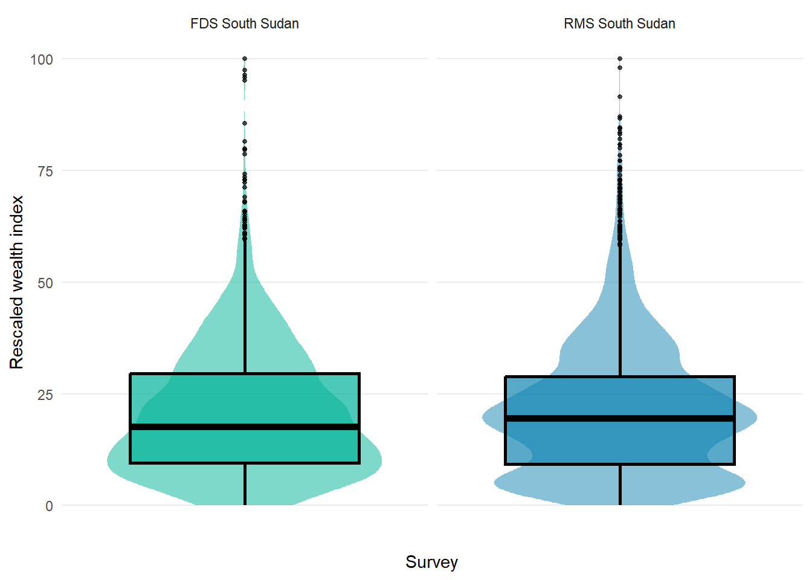
WI by population group
FDS South sudan
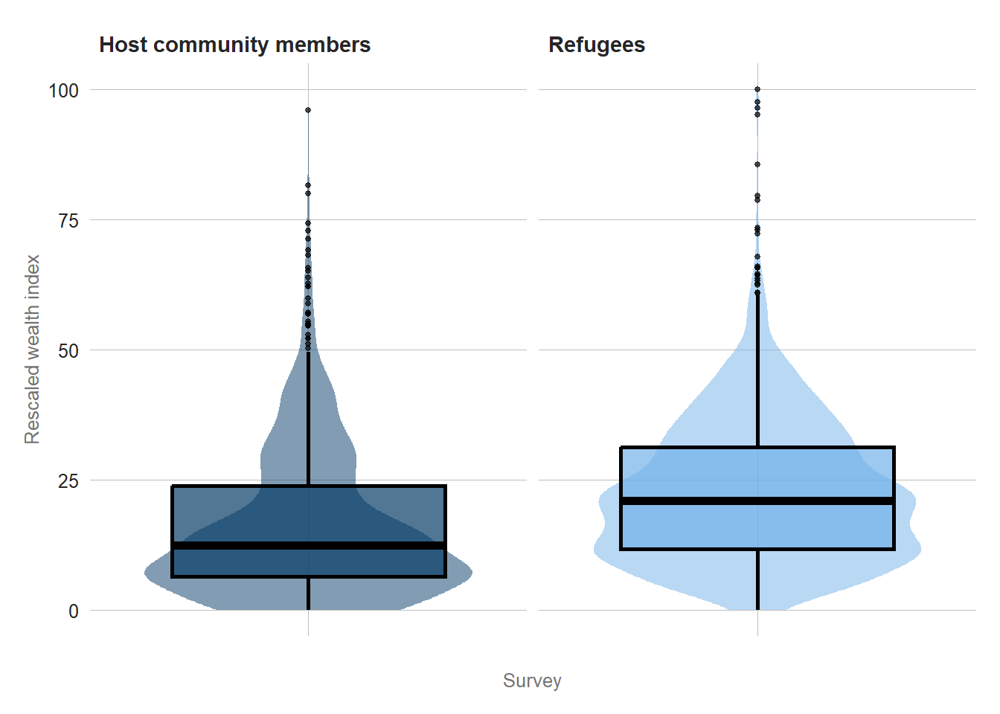
| pop_groups | n | mean | sd | median | Q1 | Q3 | min | max |
|---|---|---|---|---|---|---|---|---|
| Host community members | 960 | 16.2 | 14.6 | 12.5 | 6.4 | 23.9 | 0 | 95.9 |
| Refugees | 1964 | 22.7 | 13.8 | 21.0 | 11.8 | 31.3 | 0 | 100.0 |
| living_conditions_category | n | mean | sd | median | Q1 | Q3 | min | max |
|---|---|---|---|---|---|---|---|---|
| Good living conditions | 995 | 23.0 | 14.2 | 20.0 | 11.4 | 31.8 | 2.2 | 97.6 |
| Poor living conditions | 1929 | 19.4 | 14.4 | 16.5 | 8.2 | 28.6 | 0.0 | 100.0 |
Statistical significance (t-test) ~ 1.992264e-10
RMS South Sudan
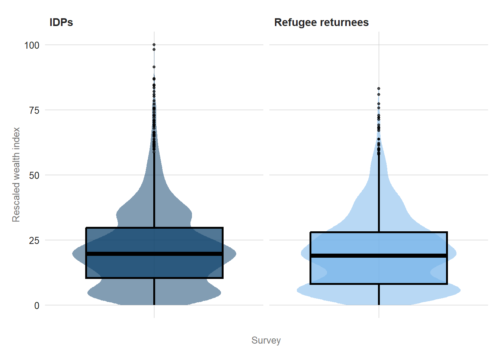
| pop_groups | n | mean | sd | median | Q1 | Q3 | min | max |
|---|---|---|---|---|---|---|---|---|
| IDPs | 2997 | 21.6 | 15.2 | 19.8 | 10.5 | 29.7 | 0 | 100.0 |
| Refugee returnees | 1820 | 20.6 | 14.2 | 19.0 | 8.1 | 28.0 | 0 | 83.2 |
FDS WI index (w/o asset variables)
Wealth Index with and without asset variables - for FDS data only.
Asset ownership is a central driver of household wealth status.
Excluding asset variables leads to a low and clumped distribution of the wealth index, with limited discriminatory power.
Incorporating asset variables produces a more dispersed index, reducing clumping and better differentiating households.
Regional differences are evident, with the South scoring higher on both the composite wealth index and the socioeconomic index.
| Region | Average comscore | Average comscore socio econ index |
|---|---|---|
| North | 45.00856 | 19.53195 |
| South | 49.28710 | 24.40267 |
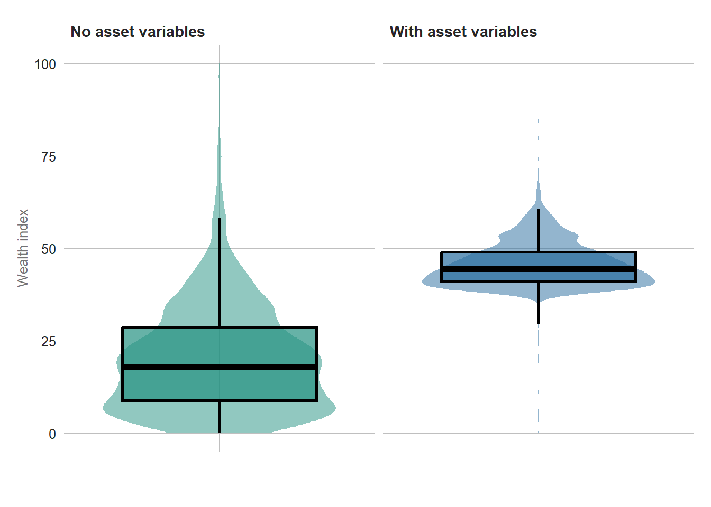
- Improved living conditions, including housing quality, sanitation, and energy access, capture the quality and high socioeconomic index.
| living_conditions_category | n | mean | sd | median | Q1 | Q3 | min | max |
|---|---|---|---|---|---|---|---|---|
| Good living conditions | 2314 | 46.0 | 6.2 | 44.8 | 41.4 | 49.3 | 11.2 | 100.0 |
| Poor living conditions | 763 | 44.5 | 6.4 | 43.8 | 40.6 | 48.2 | 0.0 | 67.2 |
Statistical significance (t-test) ~ 3.266755e-08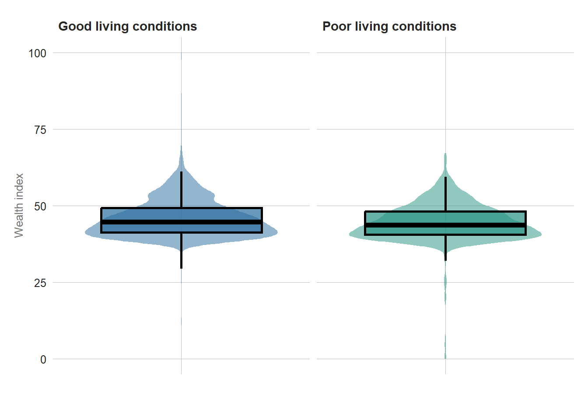
Households with 5+ assets: Scores are more spread out, showing greater discrimination.
Households with fewer than 5 assets: Scores are tightly packed, showing little variation - strong clumping.
| asset_category | n | mean | sd | median | Q1 | Q3 | min | max |
|---|---|---|---|---|---|---|---|---|
| Assets (5+) | 1589 | 49.9 | 5.6 | 48.8 | 46.3 | 53.2 | 0.0 | 100 |
| Assets (<5) | 1488 | 41.1 | 2.9 | 41.1 | 39.5 | 42.7 | 3.7 | 48 |
Statistical significance (t-test) ~ 0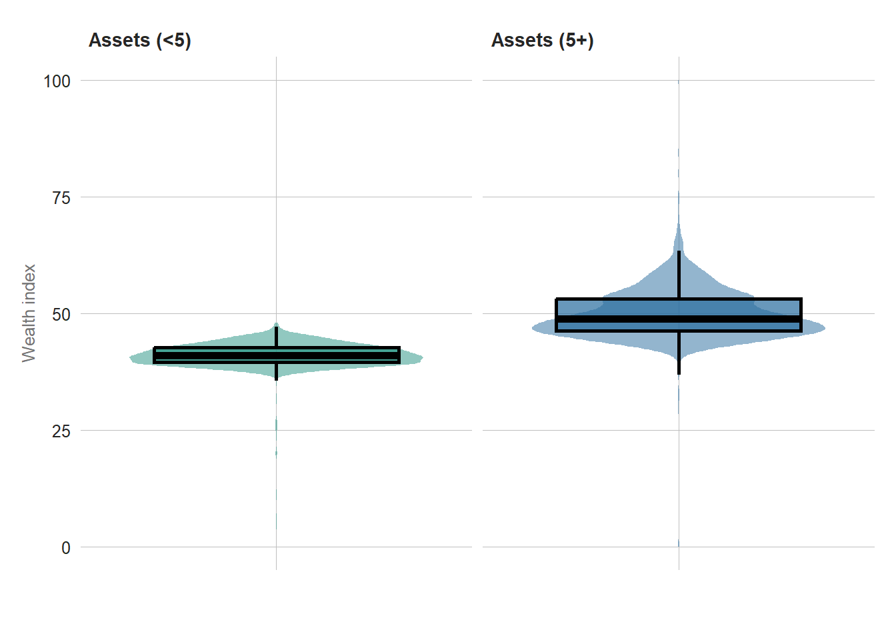
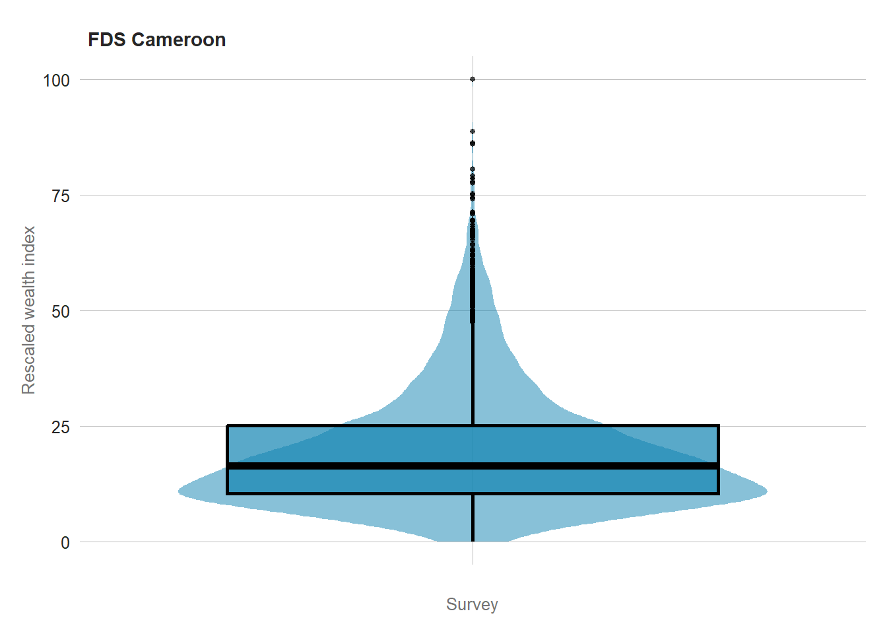
| pop_groups | n | mean | sd | median | Q1 | Q3 | min | max |
|---|---|---|---|---|---|---|---|---|
| Host community members | 1578 | 20.5 | 14.3 | 17.5 | 10.4 | 26.3 | 0 | 100.0 |
| Refugees | 2969 | 19.1 | 12.7 | 15.7 | 10.4 | 24.8 | 0 | 78.6 |
Population group
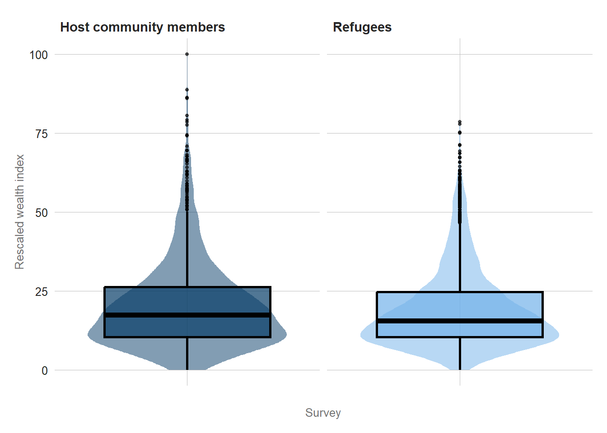
| living_conditions_category | n | mean | sd | median | Q1 | Q3 | min | max |
|---|---|---|---|---|---|---|---|---|
| Good living conditions | 3109 | 23.5 | 13.4 | 20.1 | 13.7 | 29.7 | 6.3 | 100.0 |
| Poor living conditions | 1438 | 11.1 | 7.8 | 9.6 | 5.8 | 14.8 | 0.0 | 58.4 |
Statistical significance (t-test) ~ 2.533373e-285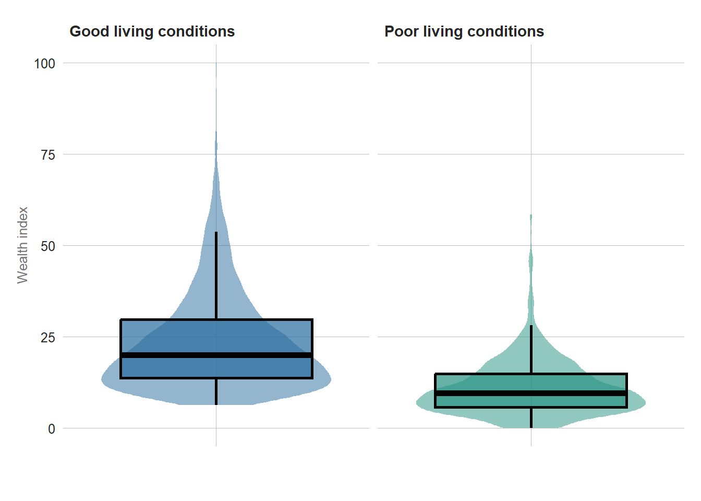
Households with 5+ assets: Scores are more spread out, showing greater discrimination.
Households with fewer than 5 assets: Scores are tightly packed, showing little variation - strong clumping.
| asset_category | n | mean | sd | median | Q1 | Q3 | min | max |
|---|---|---|---|---|---|---|---|---|
| Assets (5+) | 608 | 41.3 | 15.4 | 42.6 | 27.6 | 52.2 | 12.4 | 100.0 |
| Assets (<5) | 3939 | 16.3 | 9.1 | 14.5 | 9.8 | 21.4 | 0.0 | 50.2 |
Statistical significance (t-test) ~ 1.846785e-175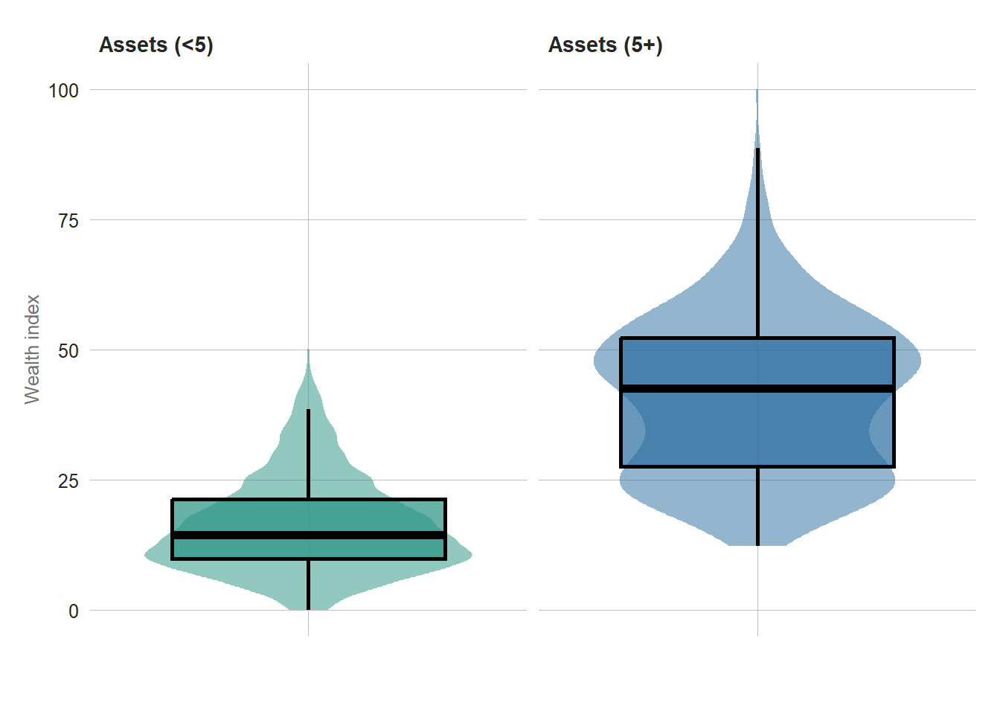
| Assets ownership | South Sudan | Cameroon |
|---|---|---|
| Assets (5+) | 49.9 | 41.3 |
| Assets (<5) | 41.1 | 16.3 |
| Living condition | South Sudan | Cameroon |
|---|---|---|
| Good living conditions | 46.0 | 23.5 |
| Poor living conditions | 44.5 | 11.1 |
| Category | Subcategory | South Sudan | Cameroon |
|---|---|---|---|
| Assets ownership | Assets (5+) | 49.9 | 41.3 |
| Assets (<5) | 41.1 | 16.3 | |
| Living condition | Good living conditions | 46.0 | 23.5 |
| Poor living conditions | 44.5 | 11.1 |
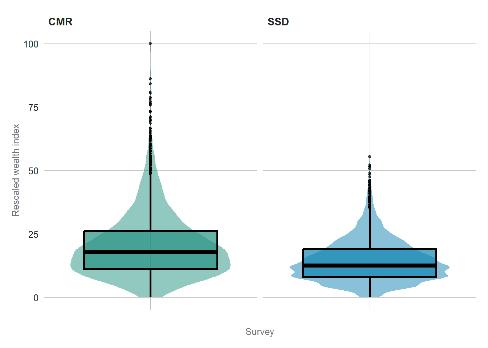
| living_conditions_category | n | mean | sd | median | Q1 | Q3 | min | max |
|---|---|---|---|---|---|---|---|---|
| Good living conditions | 4872 | 21.9 | 11.4 | 19.2 | 13.9 | 26.9 | 6 | 100.0 |
| Poor living conditions | 2753 | 10.8 | 7.1 | 9.3 | 5.1 | 14.5 | 0 | 65.1 |
Statistical significance (t-test) ~ 0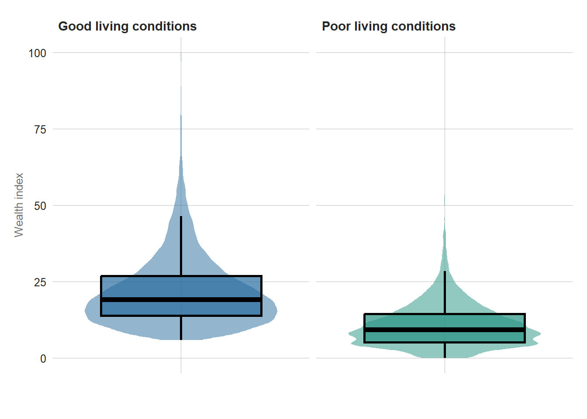
| asset_category | n | mean | sd | median | Q1 | Q3 | min | max |
|---|---|---|---|---|---|---|---|---|
| Assets (5+) | 777 | 39.3 | 12.3 | 37.1 | 29.8 | 46.3 | 18.4 | 100.0 |
| Assets (<5) | 6848 | 15.5 | 8.3 | 14.4 | 9.1 | 20.4 | 0.0 | 49.1 |
Statistical significance (t-test) ~ 5.60621e-271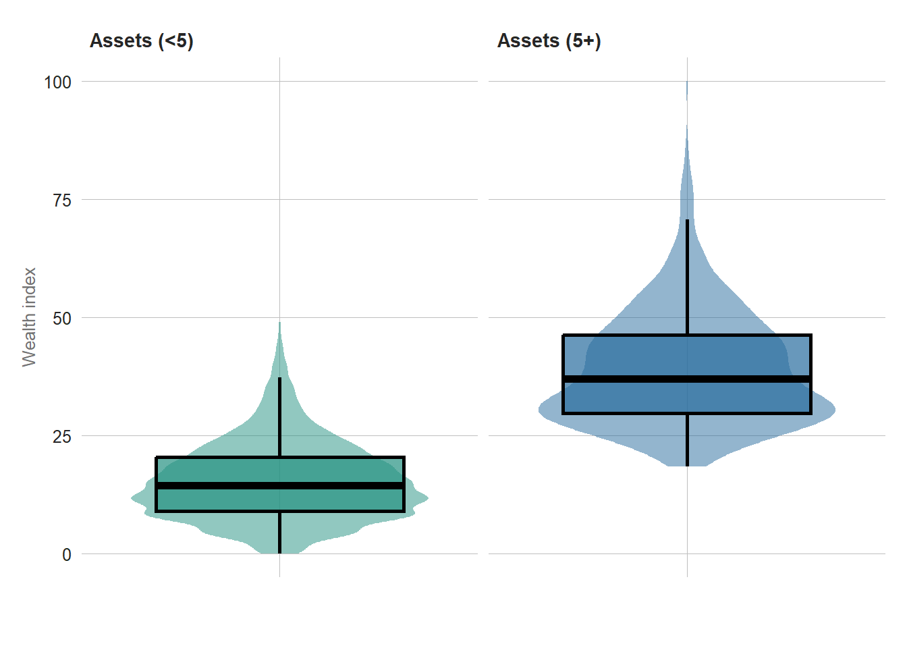
- The lockfile is already up to date.Notes:
Distribution of Household Asset Ownership by Country
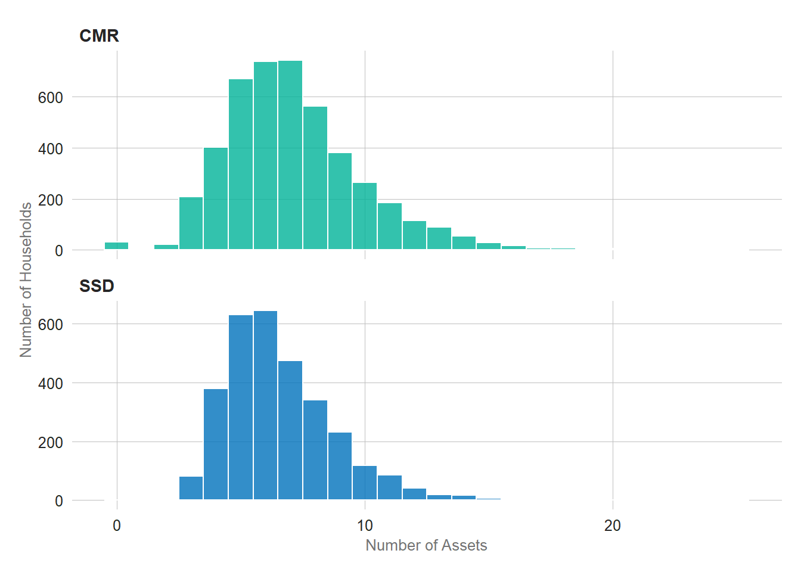
Living condition by Country
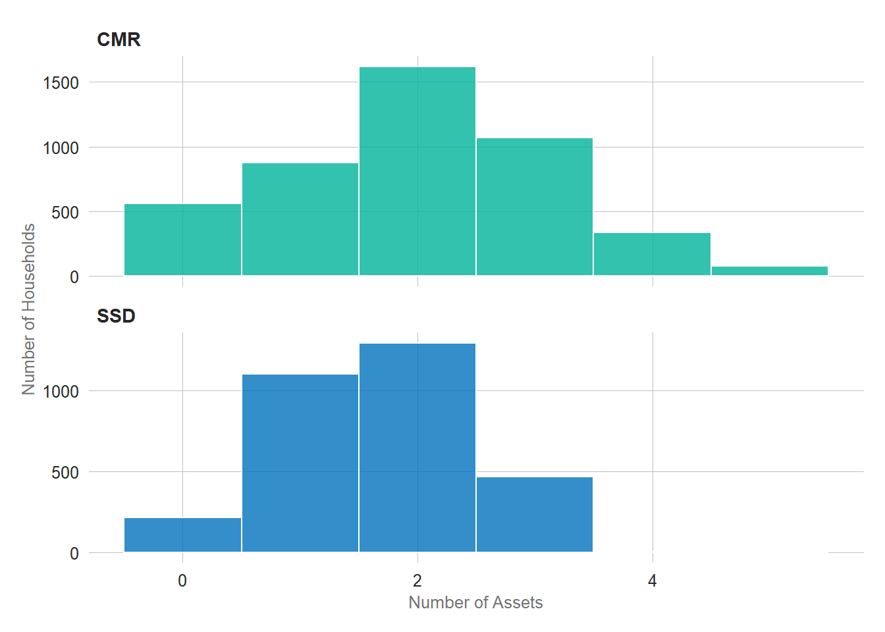
Household essentials + appliances + ICT/entertainment - core discriminators of welfare in the lower tail of wealth distribution.
Luxury/status items - high-variance indicators, aimed at driving the upper tail of the wealth distribution.
Farm tools/livestock/transport - important in rural/agricultural contexts,production capacity.
Personal items (shoes, watches) - additional good basic welfare markers, partly luxury.
| Category | Assets |
|---|---|
| Household Essentials | Bed; Mattress; Chair; Sofa; Table phone; Wall clock; Stove/kanun (traditional); Gas (or kerosene) cooker; Grinding stone; Tools for lighting (solar lamp, torch, etc.) |
| Household Appliances & Utilities | Washing machine; Refrigerator; Freezer; Fan; Room-cooler; Air conditioner; Mixer / blender; Sewing machine; Generator; Solar panel (any size); Water pump |
| Information, Communication & Entertainment | Television; Radio; CD / DVD player; Camera (non-phone); Modem / router; Cable connection; Satellite dish; Laptop / computer; Mobile phone; Smartphone |
| Luxury / Status Items | Washing machine*; Air conditioner; Camera (beyond phone); Satellite dish; Cable; Car; Truck |
| Farm Tools & Implements | Hoe; Maloda; Axe; Panga; Harrow; Spade; Ridger; Cultivators; Spreaders; Spraying cans; Plough (oxen); Diesel-driven irrigation system; Seeds for planting |
| Transport Assets | Bicycle; Motorcycle / motor scooter; Car; Truck; Tractor; Boat without motor / canoe |
| Livestock & Animals | Milk cows / bulls; Other cattle; Goats; Sheep; Pigs; Horses, donkeys, or mules; Barnyard animals (poultry, rabbits, etc.) |
| Personal Items | Pair of shoes; Hand watch |